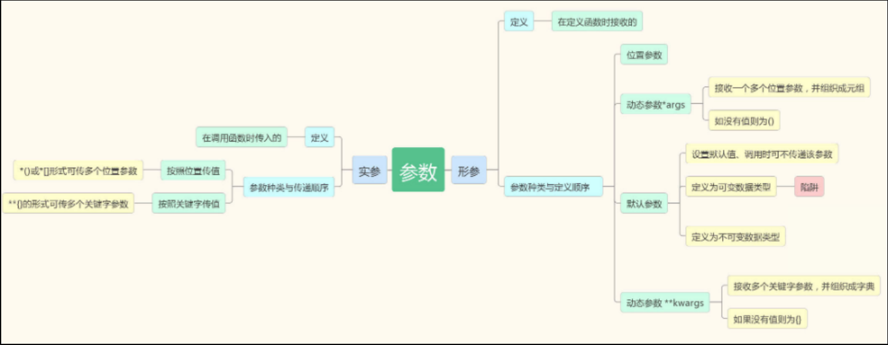

为什么要用函数
现在 python 届发生了一个大事件，len 方法突然不能直接用了。。。
然后现在有一个需求，让你计算'hello world'的长度，你怎么计算？
这个需求对于现在的你其实不难，我们一起来写一下。
好了，功能实现了，非常完美。然后现在又有了一个需求，要计算另外一个字符串的长度，"hello eva".
于是，这个时候你的代码就变成了这样：
s1 = "hello world"
length = 0
for i in s1:
length = length+1
print(length)
s2 = "hello eva"
length = 0
for i in s2:
length = length+1
print(length)
这样确实可以实现 len 方法的效果，但是总感觉不是那么完美？为什么呢？
首先，之前只要我们执行 len 方法就可以直接拿到一个字符串的长度了，现在为了实现相同的功能我们把相同的代码写了好多遍 —— 代码冗余
其次，之前我们只写两句话读起来也很简单，一看就知道这两句代码是在计算长度，但是刚刚的代码却不那么容易读懂 —— 可读性差
我们就想啊，要是我们能像使用 len 一样使用我们这一大段“计算长度”的代码就好了。这种感觉有点像给这段代码起了一个名字，等我们用到的时候直接喊名字就能执行这段代码似的。要是能这样，是不是很完美啊？
初识函数定义与调用
现在就教大家一个既能，让你们把代码装起来。
我们一起来分析一下这段代码做了什么。
其实除了 def 这一行和后面的缩进，其他的好像就是正常的执行代码。我们来执行一下，哦，好像啥也没发生。
刚刚我们已经说过，这是把代码装起来的过程。你现在只会往里装，还不会往出拿。那么应该怎么往出拿呢？我来告诉大家：
mylen()
是不是很简单？是不是似曾相识？这就是代码取出来的过程。刚刚我们就写了一个 函数 ，并且成功调用了它。
#函数定义
def mylen():
"""计算s1的长度"""
s1 = "hello world"
length = 0
for i in s1:
length = length+1
print(length)
#函数调用
mylen()
总结一：
定义：def 关键词开头，空格之后接函数名称和圆括号()，最后还有一个":"。
def 是固定的，不能变，必须是连续的 def 三个字母，不能分开
空格 为了将 def 关键字和函数名分开，必须空(四声)，当然你可以空 2 格、3 格或者你想空多少都行，但正常人还是空 1 格。
函数名：函数名只能包含字符串、下划线和数字且不能以数字开头。虽然函数名可以随便起，但我们给函数起名字还是要尽量简短，并能表达函数功能
括号：是必须加的，先别问为啥要有括号，总之加上括号就对了！
注释：每一个函数都应该对功能和参数进行相应的说明，应该写在函数下面第一行。以增强代码的可读性。
调用：就是 函数名() 要记得加上括号，好么好么好么。
函数的返回值
刚刚我们就写了一个函数，这个函数可以帮助我们计算字符串的长度，并且把结果打印出来。但是，这和我们的 len 方法还不是太一样。哪里不一样呢？以前我们调用 len 方法会得到一个值，我们必须用一个变量来接收这个值。
这个 str_len 就是‘hello，world’的长度。那我们自己写的函数能做到这一点么？我们也来试一下。
#函数定义
def mylen():
"""计算s1的长度"""
s1 = "hello world"
length = 0
for i in s1:
length = length+1
print(length)
#函数调用
str_len = mylen()
print('str_len : %s'%str_len)
很遗憾，如果你执行这段代码，得到的 str_len 值为 None，这说明我们这段代码什么也没有给你返回。
那如何让它也想 len 函数一样返回值呢？
#函数定义
def mylen():
"""计算s1的长度"""
s1 = "hello world"
length = 0
for i in s1:
length = length+1
return length
#函数调用
str_len = mylen()
print('str_len : %s'%str_len)
我们只需要在函数的最后加上一个 return，return 后面写上你要返回的值就可以了。
接下来，我们就来研究一下这个 return 的用法。
return 关键字的作用
return 是一个关键字，在 pycharm 里，你会看到它变成蓝色了。你必须一字不差的把这个单词给背下来。
这个词翻译过来就是“返回”，所以我们管写在 return 后面的值叫“返回值”
要研究返回值，我们还要知道返回值有几种情况：分别是没有返回值、返回一个值、返回多个值
没有返回值
不写 return 的情况下，会默认返回一个 None：我们写的第一个函数，就没有写 return，这就是没有返回值的一种情况。
#函数定义
def mylen():
"""计算s1的长度"""
s1 = "hello world"
length = 0
for i in s1:
length = length+1
print(length)
#函数调用
str_len = mylen()
#因为没有返回值，此时的str_len为None
print('str_len : %s'%str_len)
只写 return，后面不写其他内容，也会返回 None，有的同学会奇怪，既然没有要返回的值，完全可以不写 return，为什么还要写个 return 呢？这里我们要说一下 return 的其他用法，就是 一旦遇到 return，结束整个函数 。
返回一个值
刚刚我们已经写过一个返回一个值的情况，只需在 return 后面写上要返回的内容即可。
#函数定义
def mylen():
"""计算s1的长度"""
s1 = "hello world"
length = 0
for i in s1:
length = length+1
return length
#函数调用
str_len = mylen()
print('str_len : %s'%str_len)
注意：return 和返回值之间要有空格，可以返回任意数据类型的值
return None：和上面的两种情况一样，我们一般不这样写。
返回多个值
可以返回任意多个、任意数据类型的值
def ret_demo1():
'''返回多个值'''
return 1,2,3,4
def ret_demo2():
'''返回多个任意类型的值'''
return 1,['a','b'],3,4
ret1 = ret_demo1()
print(ret1)
ret2 = ret_demo2()
print(ret2)
返回的多个值会被组织成元组被返回，也可以用多个值来接收
def ret_demo2():
return 1,['a','b'],3,4
#返回多个值，用一个变量接收
ret2 = ret_demo2()
print(ret2)
#返回多个值，用多个变量接收
a,b,c,d = ret_demo2()
print(a,b,c,d)
#用多个值接收返回值：返回几个值，就用几个变量接收
a,b,c,d = ret_demo2()
print(a,b,c,d)
原因：
#序列解压一
>>> a,b,c,d = (1,2,3,4)
>>> a
1
>>> b
2
>>> c
3
>>> d
4
#序列解压二
>>> a,_,_,d=(1,2,3,4)
>>> a
1
>>> d
4
>>> a,*_=(1,2,3,4)
>>> *_,d=(1,2,3,4)
>>> a
1
>>> d
4
#也适用于字符串、列表、字典、集合
>>> a,b = {'name':'eva','age':18}
>>> a
'name'
>>> b
'age'
函数的参数
现在，我们已经把函数返回值相关的事情研究清楚了，我们自己已经完成了一个可以返回字符串长度的函数。但是现在这个函数还是不完美，之前我们使用 len 函数的时候得是 length = len("hello world")，这样我可以想计算谁就计算谁的长度。但是现在我们写的这个函数，只能计算一个“hello world”的长度，换一个字符串好像就是不行了。这可怎么办？
#函数定义
def mylen(s1):
"""计算s1的长度"""
length = 0
for i in s1:
length = length+1
return length
#函数调用
str_len = mylen("hello world")
print('str_len : %s'%str_len)
我们告诉 mylen 函数要计算的字符串是谁，这个过程就叫做 传递参数，简称传参，我们调用函数时传递的这个“hello world”和定义函数时的 s1 就是参数。
实参与形参
参数还有分别：
我们调用函数时传递的这个“hello world”被称为实际参数，因为这个是实际的要交给函数的内容，简称实参。
定义函数时的 s1，只是一个变量的名字，被称为 形式参数 ，因为在定义函数的时候它只是一个形式，表示这里有一个参数，简称 形参 。
传递多个参数
参数可以传递多个，多个参数之间用逗号分割。
也正是因为需要传递多个参数、可以传递多个参数，才会有了后面这一系列参数相关的故事。。。
位置参数
站在实参角度
1.按照位置传值
2.按照关键字传值
def mymax(x,y):
#此时x = 20,y = 10
print(x,y)
the_max = x if x > y else y
return the_max
ma = mymax(y = 10,x = 20)
print(ma)
3.位置、关键字形式混着用
def mymax(x,y):
#此时x = 10,y = 20
print(x,y)
the_max = x if x > y else y
return the_max
ma = mymax(10,y = 20)
print(ma)
正确用法
问题一:位置参数必须在关键字参数的前面
问题二:对于一个形参只能赋值一次
站在形参角度
位置参数必须传值
def mymax(x,y):
#此时x = 10,y = 20
print(x,y)
the_max = x if x > y else y
return the_max
#调用mymax不传递参数
ma = mymax()
print(ma)
#结果
TypeError: mymax() missing 2 required positional arguments: 'x' and 'y'
默认参数
1.正常使用
使用方法
为什么要有默认参数：将变化比较小的值设置成默认参数
2.默认参数的定义
def stu_info(name,sex = "male"):
"""打印学生信息函数，由于班中大部分学生都是男生，
所以设置默认参数sex的默认值为'male'
"""
print(name,sex)
stu_info('alex')
stu_info('eva','female')
3.参数陷阱：默认参数是一个可变数据类型
动态参数
按位置传值多余的参数都由 args 统一接收，保存成一个元组的形式
def mysum(*args):
the_sum = 0
for i in args:
the_sum+=i
return the_sum
the_sum = mysum(1,2,3,4)
print(the_sum)
def stu_info(**kwargs):
print(kwargs)
print(kwargs['name'],kwargs['sex'])
stu_info(name = 'alex',sex = 'male')
实际开发中：
未来还会用到的场景。。。
问题：
位置参数、默认参数、动态参数定义的顺序以及接收的结果？
本章小结
面向过程编程的问题：代码冗余、可读性差、可扩展性差(不易修改)
定义函数的规则：
1.定义：def 关键词开头，空格之后接函数名称和圆括号()。
2.参数：圆括号用来接收参数。若传入多个参数，参数之间用逗号分割。 参数可以定义多个，也可以不定义。 参数有很多种，如果涉及到多种参数的定义，应始终遵循位置参数、*args、默认参数、**kwargs顺序定义。 如上述定义过程中某参数类型缺省，其他参数依旧遵循上述排序
3.注释：函数的第一行语句应该添加注释。
4.函数体：函数内容以冒号起始，并且缩进。
5.返回值：return [表达式] 结束函数。不带表达式的return相当于返回 None
def 函数名(参数1,参数2,*args,默认参数,**kwargs):
"""注释：函数功能和参数说明"""
函数体
……
return 返回值
调用函数的规则：
1.函数名()
函数名后面+圆括号就是函数的调用。
2.参数：
圆括号用来接收参数。
若传入多个参数：
应按先位置传值，再按关键字传值
具体的传入顺序应按照函数定义的参数情况而定
3.返回值
如果函数有返回值，还应该定义“变量”接收返回值
如果返回值有多个，也可以用多个变量来接收，变量数应和返回值数目一致
无返回值的情况：
函数名()
有返回值的情况：
变量 = 函数名()
多个变量接收多返回值：
变量1，变量2，... = 函数名()
参数总结：

创建日期: 2022-04-01